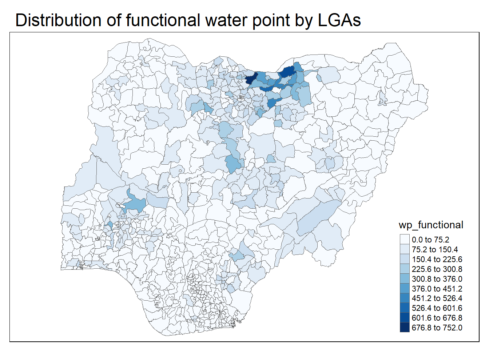
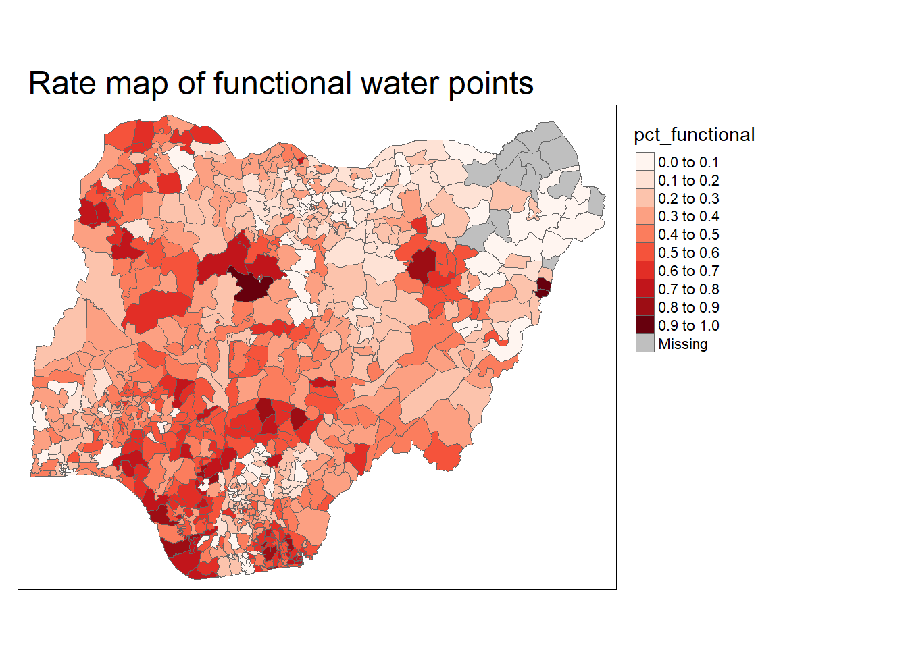

pacman::p_load(sf, tmap, tidyverse)In-Class Ex03
Getting Started
Import data
NGA_wp <- read_rds("data/rds/NGA_wp.rds")Visualising distribution of non-functional water point
p1 <- tm_shape(NGA_wp) +
tm_fill("wp_functional",
n = 10,
style = "equal",
palette = "Blues") +
tm_borders(lwd = 0.1,
alpha = 1) +
tm_layout(main.title = "Distribution of functional water point by LGAs",
legend.outside = FALSE)p2 <- tm_shape (NGA_wp) +
tm_fill("wp_functional",
n = 10,
style = "equal",
palette = "Blues") +
tm_borders(lwd = 0.1,
alpha = 1) +
tm_layout(main.title = "Distribution of total water point by LGAs",
legend.outside = FALSE)tmap_arrange(p1, nrow=1)
NGA_wp <- NGA_wp %>%
mutate(pct_functional = wp_functional/total_wp) %>%
mutate(pct_functional= wp_nonfunctional/total_wp)tm_shape (NGA_wp) +
tm_fill("pct_functional",
n = 10,
style = "equal",
palette = "Reds") +
tm_borders(lwd = 0.1,
alpha = 1) +
tm_layout(main.title = "Rate map of functional water points",
legend.outside = TRUE)
Extreme Value Map
Percentile map
0-1%, 1-10%, 10-50%, 50-90%, 90-99%, 99-100%
cumulative probabilities - c(0,01,1,5,9,99,1)
Data preparation
Step 1 - exclude records with NA by using the code chunk below.
NGA_wp <- NGA_wp %>%
drop_na()Step 2 - creating customized classification and extracting values
percent <- c(0,.01,.1,.5,.9,.99,1)
var <- NGA_wp['pct_functional'] %>%
st_set_geometry(NULL)
quantile(var[,1],percent) 0% 1% 10% 50% 90% 99% 100%
0.00000000 0.00000000 0.08333333 0.35593220 0.64444444 0.84517647 1.00000000 get.var <- function (vname, df) {
v <- df[vname] %>%
st_set_geometry(NULL)
v <- unname (v[,1])
return(v)
}percentmap <- function(vnam, df, legtitle=NA, mtitle="Percentile Map") {
percent < - c(0,.01,.1,.5,.9,.99,1)
var <- get.var (vnam, df)
bperc <- quantile(var, percent)
tm_polygons() +
tm_shape(df) +
tm_fill(vnam,
title=legtitle,
breaks=bperc,
palette="Blues",
labels= c("‹ 1%", "1% - 10%", "10% - 50%","50% - 90%", "90%-99%", "> 99%"))
tm_borders +
tm_layout(main.title = mtitle,
title.position = c("right", "bottom"))
}#percentmap("wp_functional", NGA_wp)Box Map
ggplot(data = NGA_wp,
aes(x = "",
y = wp_nonfunctional)) +
geom_boxplot()
TBC…